Ler
Obras que revelam conflitos, silêncios e experiências femininas.
MUSA — Um Olhar para a Saúde Mental Feminina a partir da Literatura Comparada, conectando histórias, ciência e cuidado para enxergar o mundo por novas perspectivas.
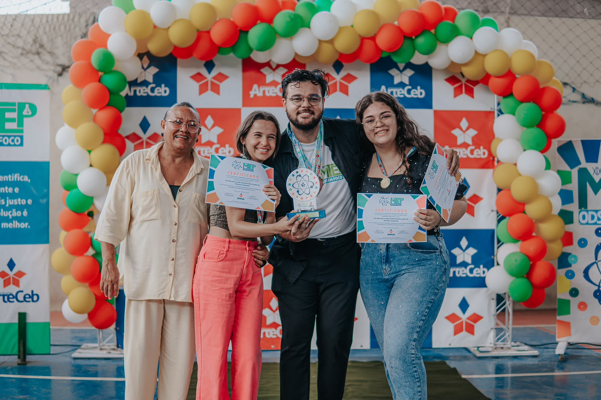
MTEP 2025 · campeão geral · credencial para Lima
Quem somos
Nosso projeto parte da literatura para compreender diferentes experiências femininas, dando voz às emoções e aos desafios que atravessam mulheres de épocas e culturas diversas.
Em cada obra, encontramos uma oportunidade de dialogar sobre saúde mental, fortalecer o cuidado e construir uma sociedade mais consciente, acolhedora e humana.
Entenda como pesquisamosObras que revelam conflitos, silêncios e experiências femininas.
Especialistas e público ampliam as perspectivas da investigação.
Ciência e arte tornam o debate mais próximo, humano e acessível.
Uma investigação que cresceu a cada ciclo, cruzou linguagens e chegou cada vez mais longe.
Investigamos como diferentes autoras representam depressão, ansiedade, vulnerabilidade e preconceito em contextos históricos, sociais e culturais distintos.
Obras do ciclo
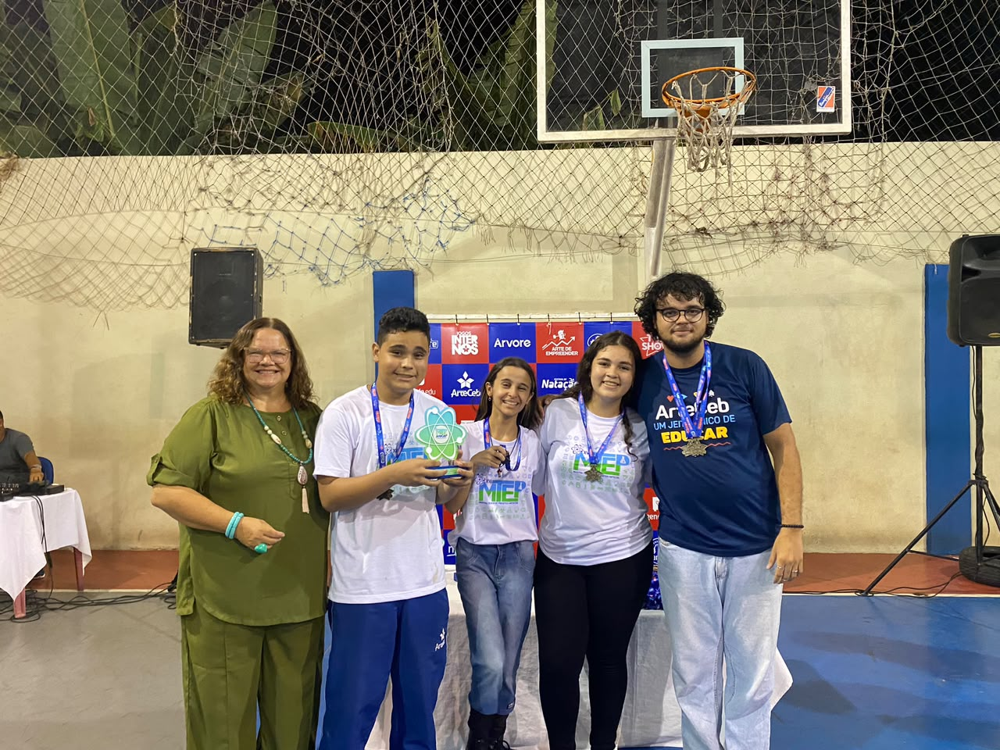
Conquista
1º lugar · LLAMTEP ArteCeb e credencial para a feira Ciência Jovem, em Recife–PE.
Conversas com especialistas e apresentações públicas aproximam a pesquisa de experiências, práticas e perspectivas diferentes.
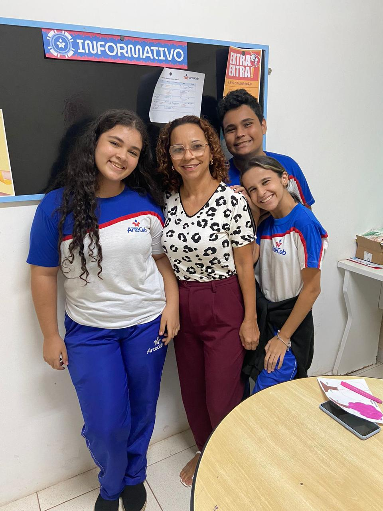
Escuta especializada sobre autoestima, traumas e saúde mental feminina.
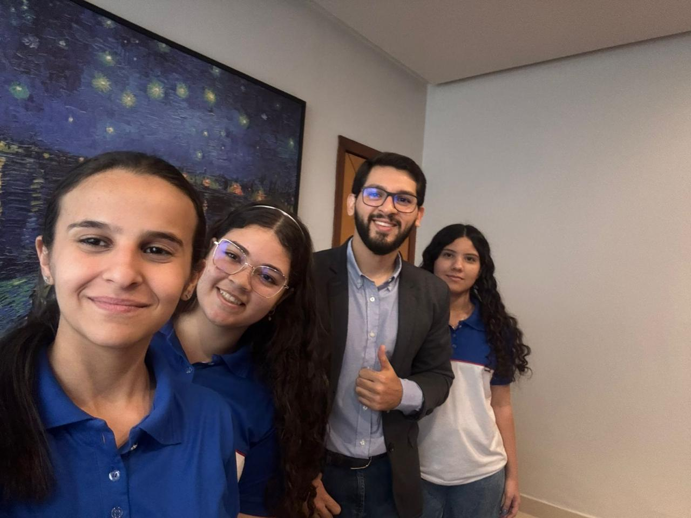
Um novo encontro para ampliar o diálogo entre literatura, subjetividade e cuidado.
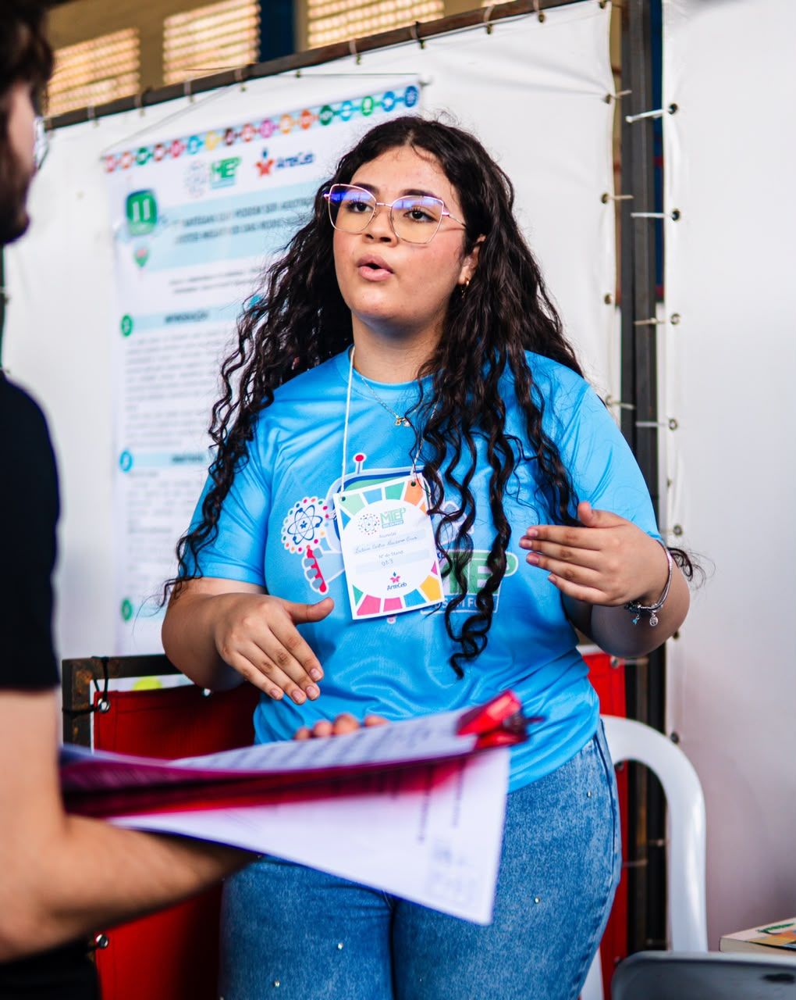
A pesquisa ganha vida quando é apresentada, discutida e colocada em circulação.
Resenhas e análises autorais de todos os ciclos da pesquisa. Escolha um ano e toque em uma leitura para conhecer o olhar de cada pesquisador.
A cura começa quando a pessoa reconhece suas feridas e se permite reconstruir novos caminhos.
Quatro conversas com especialistas aproximam a pesquisa de temas como autoestima, adolescência, maternidade, ansiedade e machismo estrutural.
Uma equipe unida pela curiosidade, pelo afeto e pela certeza de que pesquisar também é uma forma de cuidar.
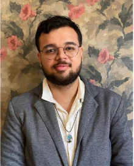
da Silva Sousa
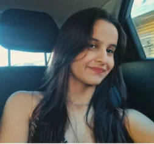
Sarmento Costa
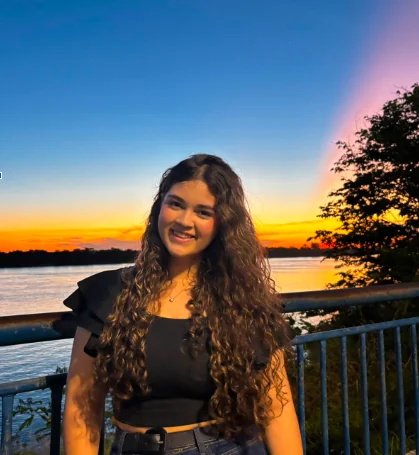
Barbosa Cruz
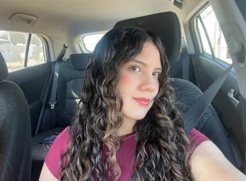
de Oliveira dos Reis
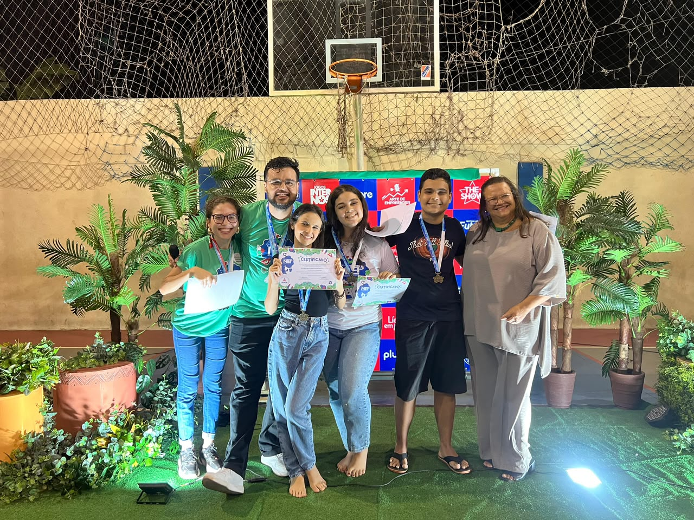
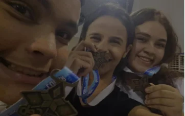
O reconhecimento é consequência de um processo feito de estudo, encontros, perguntas difíceis e coragem para falar sobre o que tantas vezes é silenciado.
1º lugar em LLAMTEP + credencial Ciência Jovem
2º lugar em LLAMTEP ArteCeb
Campeão geral1º em LLA + credencial Cientec
Novo cicloTrês obras brasileiras em leitura
Conheça o produto criado pelo projeto e as formas de apoiar a continuidade da pesquisa. A equipe atende pessoalmente pelo WhatsApp para informar valores e disponibilidade.
Uma agenda criada para acompanhar rotinas, registrar sentimentos e incentivar momentos de cuidado e reflexão. As informações de lançamento serão divulgadas pela equipe.
Consultar pelo WhatsApp ↗Produtos, apoio ou convite
Atendimento pelo WhatsApp
Cada apoio move a pesquisa